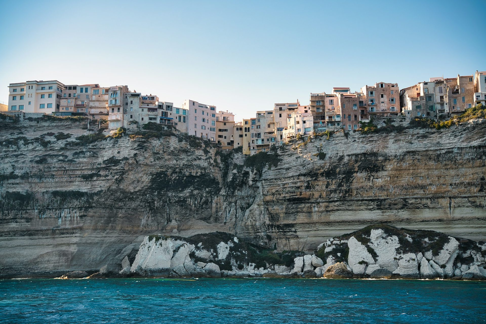
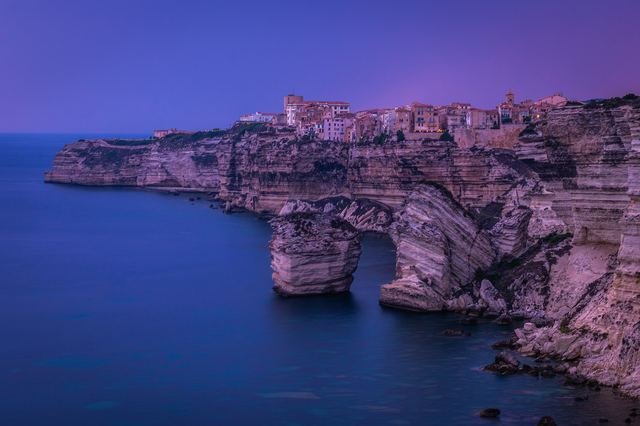

Corsica, the Isle of Beauty between citadels and turquoise water
Genoese citadels by the sea, white cliffs, sandy beaches and wild islands: discover Corsica town by town.
Photo: Maksim Shutov / Unsplash
Corsica is split into two departments: Corse-du-Sud around Ajaccio and Haute-Corse around Bastia. You arrive by plane, through the airports of Ajaccio, Bastia, Calvi and Figari, or by ferry from Marseille, Toulon, Nice and Italy.
Distances look short on the map, but the roads are winding: allow plenty of time between towns. Each guide tells you what to see, how to get there and what to book.
Ajaccio and the west coast


Bonifacio, Porto-Vecchio and the south
-
 Bonifacio
BonifacioThe upper town on the edge of white cliffs, facing Sardinia.
-

The Bonifacio cliffsThe white limestone cliffs, by boat or on foot to the Pertusato lighthouse.
-
 Lavezzi Islands
Lavezzi IslandsThe wild archipelago off Bonifacio, its coves and granite boulders.
-
 Porto-Vecchio
Porto-VecchioThe Genoese citadel, Palombaggia and Santa Giulia.